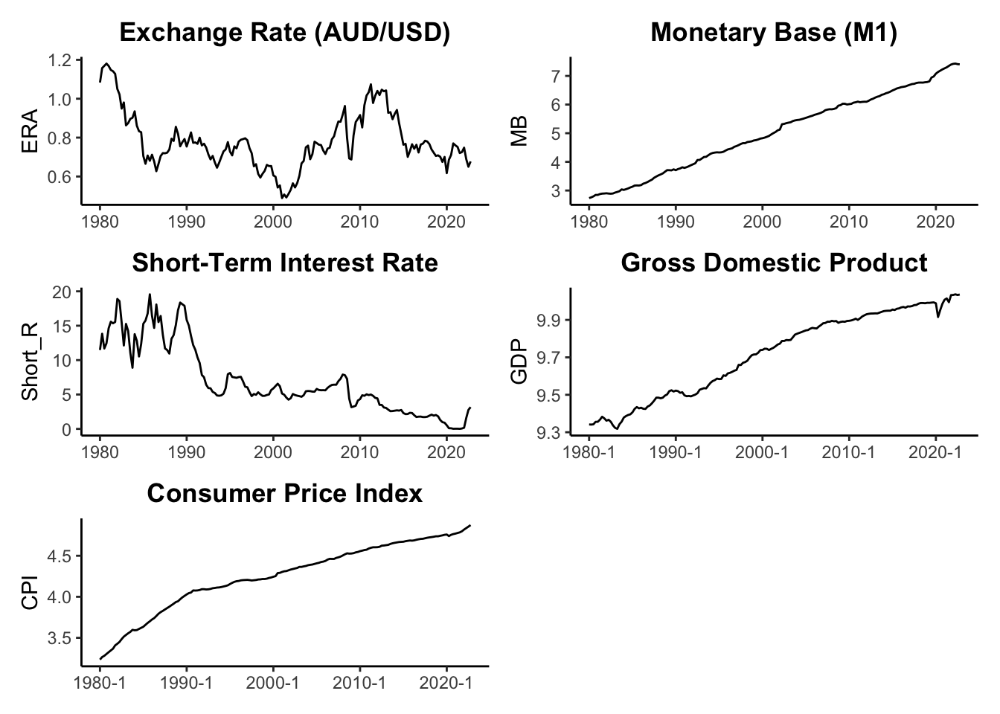
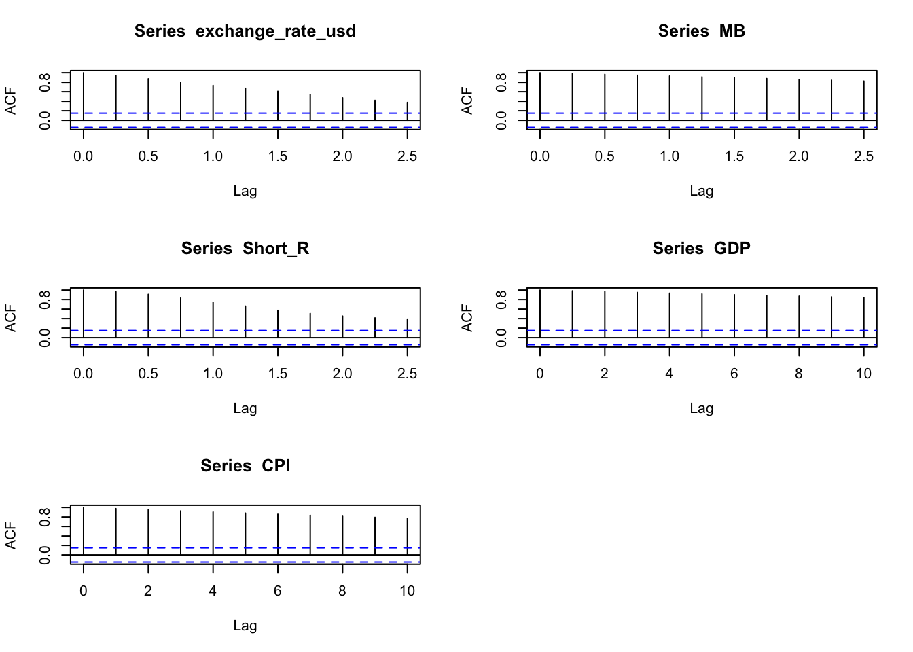
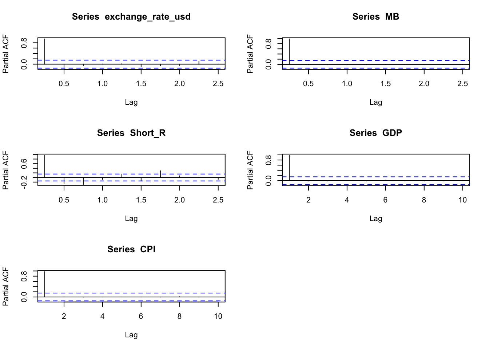

Effects of monetary policy shocks on exchange rate: Evidence from Australia
Abstract. This research proposal aim to examine the exchange rate reactions to monetary policy shocks in Australia from 1980 to 2022 using the Bayesian Structural Vector Auto-regression (SVAR) model.
Keywords. R, Monetary policy, exchange rate, SVAR model
Introduction
How monetary policy shocks affect exchange rate? The most well-known study from Dornbusch (1976) documented the overshooting model, which predicts that the monetary expansion would leads to an increase in domestic interest rate and persistene deprecision of exchange rate. However, more economists such as Eichenbaum and Evans (1995) utilized VAR model found that contractionary monetary policy shocks lead to an appreciation in exchange rate, but might be delayed.
The recent study Kim and Lim (2018) further explored that relatively short delay in the effect of contractionary monetary shock to exchange rate appreciation for the UK, Australia, Sweden and Canada.
This paper aims to focus on investigate the effect of monetary shock in a small open economy Australia, applying the Bayesian Structural Vector Auto-regression (SVAR) model. What is the role of monetary policy shock in exchange rate behavior in Australia? Are the effect similar to those large countries? Do we find similar puzzling responses?
Data
The endogenous variables for the SVAR analysis included:
Exchange rate of AUD/USD (ERA): nominal average exchange rate AUD/USD (from RBA)
Monetary base M1 (MB): Monetary base, seasonally adjusted (M1) (from RBA)
Short–term interest rate (Short_R) : the Bank Accepted Bills/Negotiable Certificates of Deposit-3 months (from RBA)
Gross Domestic Product (GDP): Real GDP (quarterly) Gross domestic product, Chain volume measures (from RBA)
Consumer Price Index(CPI): Consumer price index, seasonally adjusted quarterly (from ABS)
The data are collected from the Reserve Bank of Australia (RBA) and Australian Bureau of Statistics (ABS), adjusted in quarterly frequency and from 1980 Q1 to 2022 Q4, including 172 observations.
The first variable is the key variable in the analysis of the research, and the other 5 variables are the key monetary variables to identify the monetary shocks in Australia. All variables data have taken Logarithm except short-term interest rate and plotted in Figure 1: Time-series plots.
Figure 1: Time-series plots
Exchange rate changes are volatile overtime, exhibits peaks and troughs. Monetary base, GDP and CPI all illustrate increasing trend overtime, with some drops during the global financial crisis and during COVID-19 period. Short-term interest rate displays a downward trend since 2000. All time-series plots are restricted in the time period from 1980 Q1 to 2022 Q4.
Table 1: Summary statistics provides statistics summary of all variables from 1980 Q1 to 2022 Q4.
| variable | N | mean | sd | Min | Max |
|---|---|---|---|---|---|
| ERA | 172 | 0.78 | 0.14 | 0.49 | 1.18 |
| MB | 172 | 5.03 | 1.38 | 2.74 | 7.43 |
| Short_R | 172 | 7.04 | 5.02 | 0.01 | 19.56 |
| GDP | 172 | 12.69 | 0.39 | 12.03 | 13.31 |
| CPI | 172 | 4.26 | 0.41 | 3.23 | 4.87 |
Table 1: Summary statistics
Preliminary Results
Figure 2: ACF plots shows that for GDP and CPI have non-zero auto correlations for at least 10 lags, for the ERA, MB, Short_R have non-zero auto correlations for at least 10 lags (shown in 2.5 years).
Figure 3: PACF plots shows no statistically significant lags except short-term interest rate. Short-term interest rate has some spikes in 4th lag and 5th lag, but not strong.

Figure 2: ACF plots

Figure 3: PACF plots
Augmented Dickey-Fuller Test is performed to test for stationarity, the null hypothesis is unit-root non-stationary.
Table 2: ADF test shows that for ERA, MB, GDP, we can not reject the null hypothesis at 5% significant level and considered as unit-root non-stationary. Short-term interest rate and CPI can reject the null at 5% significant level and considered as unit-root stationary.
Table 3: ADF test of First Difference shows the first difference of all variables, ERA, MB, GDP can reject the null at 5% significant level and considered as unit-root stationary at first order condition, they are integrated of order 1.
| Dickey-Fuller | Lag order | p-value | |
|---|---|---|---|
| ERA | -3.12 | 5 | 0.11 |
| MB | -3.14 | 5 | 0.10 |
| Short_R | -3.59 | 5 | 0.04 |
| GDP | -1.99 | 5 | 0.58 |
| CPI | -3.72 | 5 | 0.02 |
Table 2: ADF test
| Dickey-Fuller | Lag order | p-value | |
|---|---|---|---|
| ERA | -4.91 | 5 | 0.01 |
| MB | -4.47 | 5 | 0.01 |
| Short_R | -6.48 | 5 | 0.01 |
| GDP | -5.90 | 5 | 0.01 |
| CPI | -2.71 | 5 | 0.28 |
Table 3: ADF test of First Difference
Methodology
The Structural Form (SF) model of Structural VARs is:
\[\begin{align} B_{0} Y_{t} =b_{0} + \sum_{i=0}^{p} (B_{i}Y_{t-i} )+u_{t} \end{align}\] \[\begin{align} u_{t}|Y_{t-1} \sim iid(0_{N},I_{N} ) \end{align}\]\(Y_{t}\) is \(N \times 1\) matrix of endogenous variable, \(B_{0}\) is \(N \times N\) matrix of contemporaneous relationships, \(u_{t}\) is a \(N \times 1\) vector of conditionally on\(Y_{t-1}\)orthogonal or independent structural shocks.
The Reduced Form (RF) representation is:
\[\begin{align} Y_{t} =\mu_{0} + \sum_{i=0}^{p} (A_{i}Y_{t-i} )+\epsilon_{t} \end{align}\] \[\begin{align} \epsilon_{t}|Y_{t-1} \sim iid(0_{N},\Sigma ) \end{align}\]References
Dornbusch, Rudiger. 1976. “Expectations and Exchange Rate Dynamics.” Journal of Political Economy 84 (6): 1161–76. https://doi.org/10.1086/260506.
Eichenbaum, M., and C. L. Evans. 1995. “Some Empirical Evidence on the Effects of Shocks to Monetary Policy on Exchange Rates.” The Quarterly Journal of Economics 110 (4): 975–1009. https://doi.org/10.2307/2946646.
Kim, Soyoung, and Kuntae Lim. 2018. “Effects of Monetary Policy Shocks on Exchange Rate in Small Open Economies.” Journal of Macroeconomics 56 (June): 324–39. https://doi.org/10.1016/j.jmacro.2018.04.008.